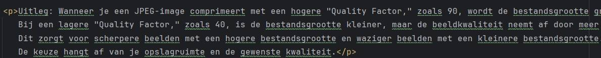
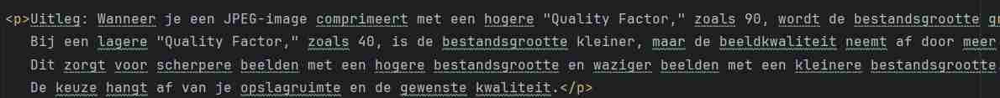

Originele foto
Foto 90%

Foto 70%
Foto 40%
Uitleg: Wanneer je een JPEG-image comprimeert met een hogere "Quality Factor," zoals 90, wordt de bestandsgrootte groter en behoudt de afbeelding een betere kwaliteit.
Bij een lagere "Quality Factor," zoals 40, is de bestandsgrootte kleiner, maar de beeldkwaliteit neemt af door meer compressie.
Dit zorgt voor scherpere beelden met een hogere bestandsgrootte en waziger beelden met een kleinere bestandsgrootte.
De keuze hangt af van je opslagruimte en de gewenste kwaliteit.
Originele foto
Foto 70%
Foto 20%
Bij het verlagen van de "Quality Factor" in de screenshot wordt de tekst minder leesbaar en minder scherp.
Dit komt omdat er meer gegevens verwijderd zijn om de bestandsgrootte te verkleinen, dit heeft als resultaat: wazigheid, vervorming en verlies van scherpte van de tekst.